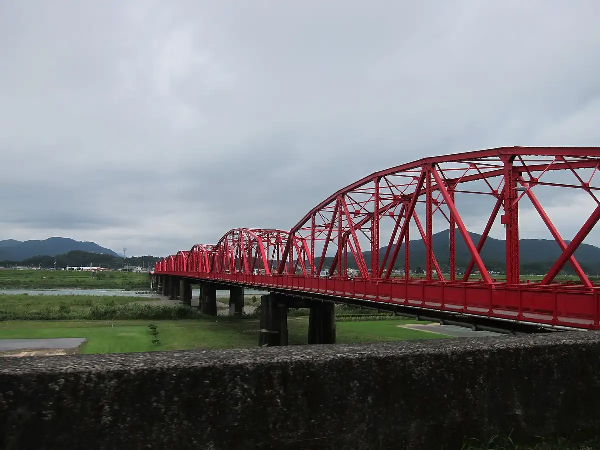
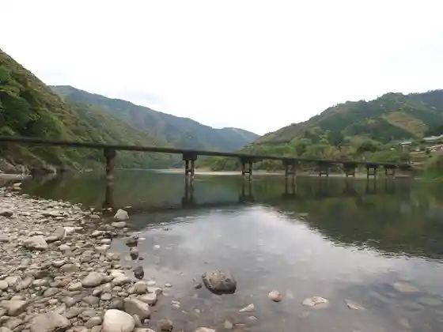
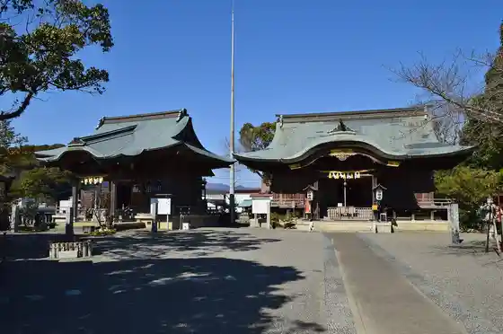
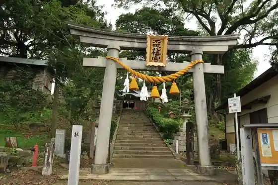

Shimanto
Shimanto · Kochi
Shimanto
Highlighted on the Kochi map.

Stay
Shin Roiyaru Hotel Shimanto
Hotel Sanriba Shimanto
Naka Village Purinsu Hotel
Hotel Kuraunhiruzu Naka Village
Naka Village Daiichi Hotel
Hotel Kokomo
Shimanto no Yado
Nagomi Yado Anju Iori
Yama Mizu Ki
Shimanto Ribasaido
Shimanto Kawa no Kakure Koteji Oriya
Ko Minka Yado Netsu Kiii Kitsune
Kashikiri Yado Hotori
San'indo
Minshuku Suzu
Minshuku Koban
Dining
Izakaya Kaneki
65 Namurima
Hobai
Izakaya Makoto Michi
Katekote
Yorokobi
Pateisurii fuu
cafe n2
Yama Takashi
Izakaya
Ichimon Ie
Kotetsu
Yamakawa Umi
Sho no Tomoshibi
Shimanto Ya
Shinatora Naka Village Mise
SHADE TREE COFFEE
Izakaya Mori Moto Ya
Wagashi Tokoro Oishi
Manma Miya
Izakaya Kihachi
Otora
Aoi
Ramenhausu
Sanukiyaudon
Joren
Maru Ushi
Yakatabune Shimanto Ryori
Jun Aji Izakaya Masudaya
Showa Bugiugi Shokudo
Yakiniku Takami
Izakaya Kafe Bisoa
Chikin Kan Main Shop
Onsen
Shin Roiyaru Hotel Shimanto Public Bath
Hotel Kokomo Public Bath
Nagomi Yado Anju Iori Rotemburo
Yama Mizu Ki Rotemburo
Shimanto no Yado Public Bath
Hotel Kuraunhiruzu Naka Village Public Bath
Shimanto Ribasaido Sotoburo
San'indo Goemomburo
Hotel Seira Shimanto Public Bath
Experience
Roadside Station Yotte Nishitosa
Sights
Shimanto Kawa Hashi
Iwama Chinkakyo

Sada Chinkakyo
Ichijo Shrine

Fuwa Hachiman Shrine

Tombo Nature Park
Chosei Chinkakyo
Ko Tsuga Shrine
Naka Village Castle Ruins
Shimanto Ritsu Local History Museum
Makoto Sei Tera
Taihei Tera
Shimanto Kawa Sakura Zutsumi Park
Tosa Seinandai Kibo Park
Iwami Tera